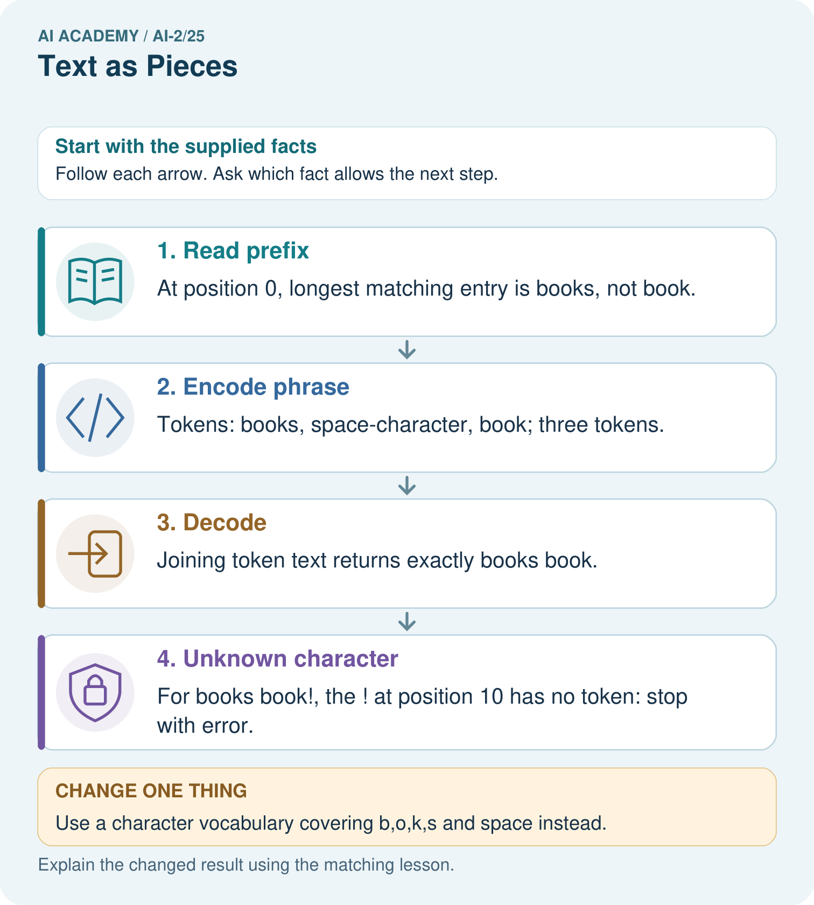
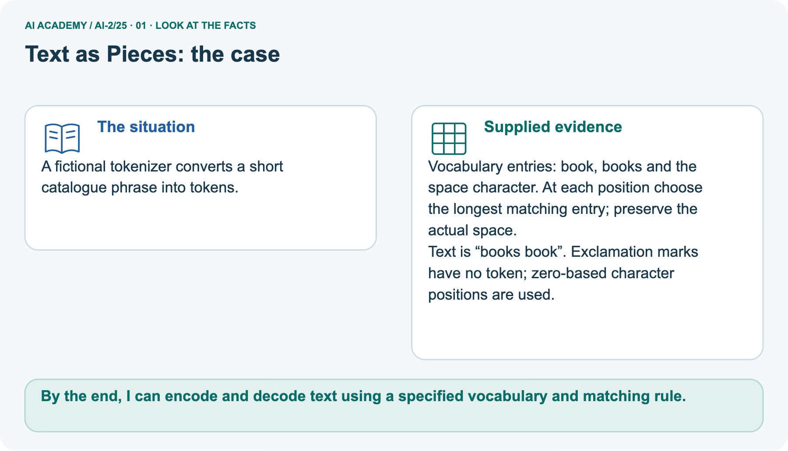
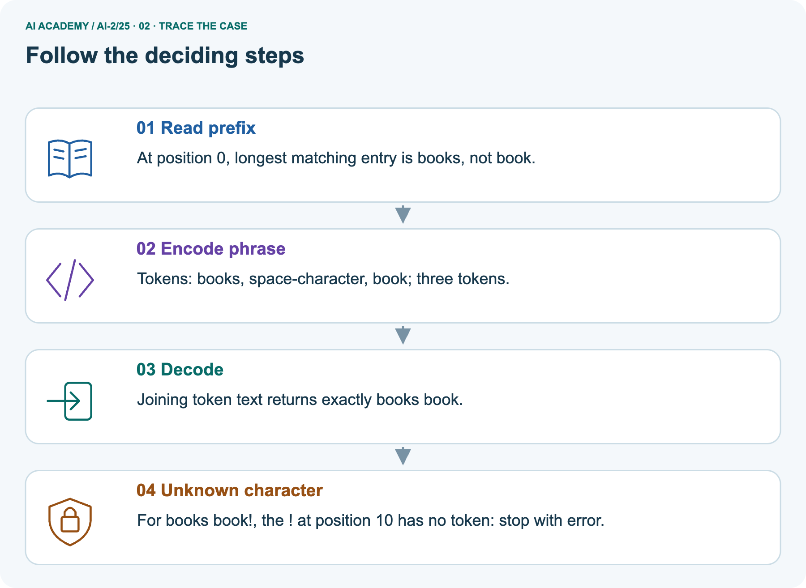
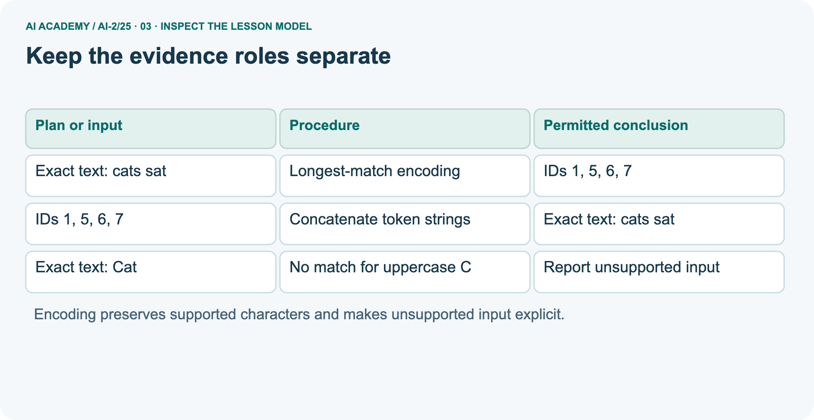
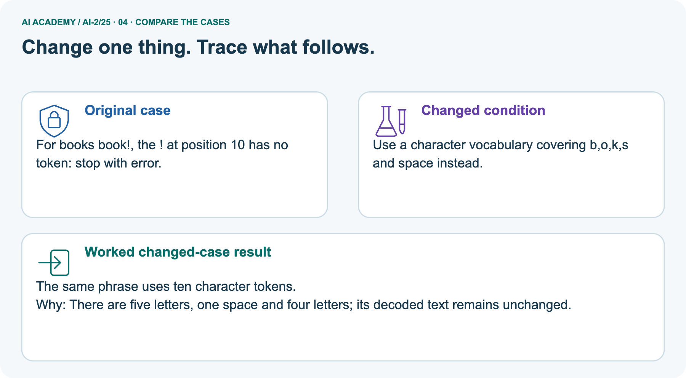
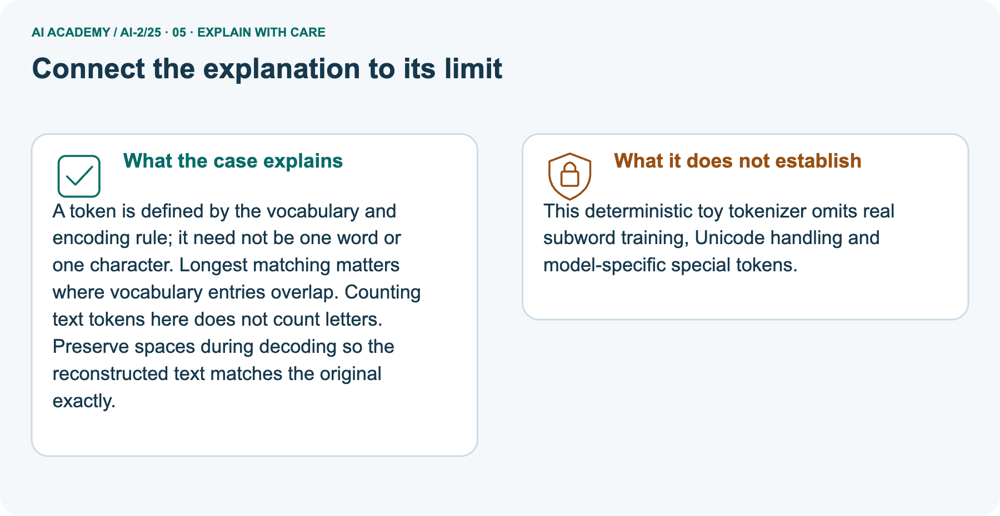
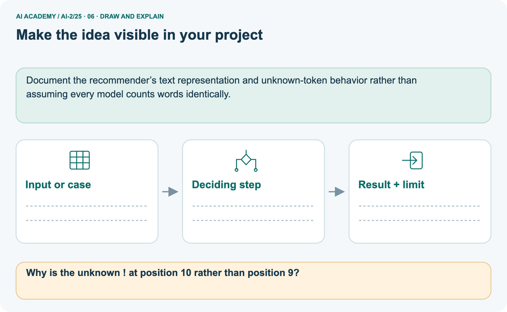

AI Academy · Level 2 · Grade 7 · Week 25 · Workbook
Text as Pieces
Learn to understand, design, build, test and explain AI systems responsibly.
Project: Transparent Book Recommender
THE CONNECTED WEEK
One connected exact-tokenization record.
Apply the contract, encode/decode, compare sequence lengths and audit preprocessing claims.
Keep one habit: Keep source text, vocabulary/rule version, ordinary/special counts and partial failures visible.
Main lesson · Section 1
Recall: reconnect earlier ideas
Retrieve before opening notes.
Retrieve and explain
Try the recall before opening notes. Then use a different colour or a labelled second line to correct your explanation.
Without opening the old lesson, explain one key idea from Feedback Loops. Give an example and a mistake that the idea helps you avoid.
Without opening the old lesson, explain one key idea from Nearest Neighbor Reasoning. Give an example and a mistake that the idea helps you avoid.
Without opening the old lesson, explain one key idea from Sampling and Representation. Give an example and a mistake that the idea helps you avoid.
Earlier wording, alternatives and picture transcripts
Feedback Loops
Nearest Neighbor Reasoning
Sampling and Representation
Main lesson · Section 12
W1 · Apply longest matching and case sensitivity
IDs identify vocabulary entries, not meaning.
Your evidence record
Original case-sensitive vocabulary:0=end(special),1=cat,2=c,3=a,4=t,5=s,6=one literal space,7=sat. Longest ordinary prefix wins; preserve case/punctuation/space. Unsupported characters stop encoding with a partial trace and zero-based character position. Decode ordinary text IDs by concatenating their strings; state separately if an end marker is appended. Do not reuse the separate book/books vocabulary.
Explain why sat wins over s at the start of sat and why uppercase C is unsupported.
Main lesson · Section 13
W2 · Encode, decode and declare the count
Keep four text tokens separate from an appended end marker.
Your evidence record
Original case-sensitive vocabulary:0=end(special),1=cat,2=c,3=a,4=t,5=s,6=one literal space,7=sat. Longest ordinary prefix wins; preserve case/punctuation/space. Unsupported characters stop encoding with a partial trace and zero-based character position. Decode ordinary text IDs by concatenating their strings; state separately if an end marker is appended. Do not reuse the separate book/books vocabulary.
Encode cats sat using the given vocabulary, decode it, and count with and without an appended end marker.
Main lesson · Section 14
W3 · Compare character and chunk vocabularies
The source stays the same when representation changes.
Your evidence record
Original case-sensitive vocabulary:0=end(special),1=cat,2=c,3=a,4=t,5=s,6=one literal space,7=sat. Longest ordinary prefix wins; preserve case/punctuation/space. Unsupported characters stop encoding with a partial trace and zero-based character position. Decode ordinary text IDs by concatenating their strings; state separately if an end marker is appended. Do not reuse the separate book/books vocabulary.
Encode cats sat with character tokens only. Explain the difference from four text tokens in the original vocabulary.
Main lesson · Section 16
W5 · Audit undeclared preprocessing
An altered source cannot be called an exact original round trip.
Your evidence record
Original case-sensitive vocabulary:0=end(special),1=cat,2=c,3=a,4=t,5=s,6=one literal space,7=sat. Longest ordinary prefix wins; preserve case/punctuation/space. Unsupported characters stop encoding with a partial trace and zero-based character position. Decode ordinary text IDs by concatenating their strings; state separately if an end marker is appended. Do not reuse the separate book/books vocabulary.
An encoder lowercases Cat and removes punctuation before encoding, but labels its output an exact encoding of the original. Explain what must be recorded or changed.
Main lesson · Section 4
W4 · Trace a new input independently
Keep one first attempt before hints or feedback.
Read and explain independently
Original case-sensitive vocabulary:0=end(special),1=cat,2=c,3=a,4=t,5=s,6=one literal space,7=sat. Longest ordinary prefix wins; preserve case/punctuation/space. Unsupported characters stop encoding with a partial trace and zero-based character position. Decode ordinary text IDs by concatenating their strings; state separately if an end marker is appended. Do not reuse the separate book/books vocabulary.
Under the original vocabulary encode sat cats, decode it and count text tokens. Then trace sat cat! and state the exact failure position using zero-based character positions.
Keep a fair record
Attempt this case before feedback. Record any help. Earlier examples below are further practice; a case already practised with feedback cannot establish fresh transfer.
Earlier wording, alternatives and picture transcripts
Independent case: Trace a new input independently
Main lesson · Section 9
Project · Keep the decision and its evidence
Add this week’s change to your existing project record.
Your evidence record
Tokenize book descriptions before any text-based matching, while preserving the original source text.
The project change and evidence I will keep
Main lesson · Section 17
Feedback · Repair and return
Keep the first attempt, the repair and a changed-case return.
Your evidence record
| Evidence | My record |
|---|---|
| Worked alone / hint / model | |
| First step I repaired and why | |
| New case checked later; date and result | |
| What I can now explain without notes | |
| One remaining question |
Revisit this idea with your teacher after a delay. Familiarity is different from explaining and using it on a changed case.
Main lesson · Section 10
Finish · Judge the evidence in your work
Point to work that supports your confidence level.
Your evidence record
- I can explain the mechanism.
- I can show evidence.
- I can handle a changed case.
- I can name a limit.
Mark each as not yet, with help or independently, and attach supporting work.
Teacher review ____________________ Next step ____________________
Reference bank and extra practice
Choose the reference that helps your next step.
Reference · Supported W2 record
Reference · Section 2
Reference · Supported W2 record
This is the same W2 attempt. Keep one response record.
Use this when helpful
Use W2: Encode and decode for Tokenisation and vocabulary. Record the answer once; the lesson and workbook refer to the same attempt.
| Given inputs | Procedure I chose | Middle steps | Result and check |
|---|---|---|---|
Extra practice · Repair the explanation
Reference · Section 3
Extra practice · Repair the explanation
Explain the deciding fact before discussing the answer.
Use this when helpful
Use the worked case for Tokenisation and vocabulary. Proposed explanation: “A token always equals a word”. Decide whether this explanation is supported.
Point to the step or supplied fact that decides; explain your repair if needed.
Reference · Original learning target
Reference · Section 5
Reference · Original learning target
Use this target to inspect an explanation.
Use this when helpful
Toy tokenizer A splits 'unhelpful' into un/help/ful; B keeps it whole. Count tokens for each and explain why a three-word sentence need not use three tokens.
Extra practice · A complete case
Reference · Section 6
Extra practice · A complete case
Try the question before checking the worked explanation.
Use this when helpful
Toy tokenizer A splits rainbows as [rain][bow][s]; B uses [rainbows].
Count tokens and state the limit of the example.
Show your trace, calculation or evidence
Extra practice · A changed case
Reference · Section 7
Extra practice · A changed case
Keep this practice separate from the reserved independent attempt.
Use this when helpful
A classroom tokenizer splits sunflower into sun and flower. How many pieces result? Must every real tokenizer split it the same way?
My practice answer and reason
Week 25 Test and reflect
Extra practice · Design a revealing test
Reference · Section 8
Extra practice · Design a revealing test
Predict before tracing or testing.
Use this when helpful
Create a changed input, boundary case or missing-information case. Write the expected answer or safe response before testing.
| Test record | My evidence |
|---|---|
| Changed input or condition | |
| Expected answer or fallback | |
| Observed result | |
| Why the result occurred |
Reference · Original target response space
Reference · Section 11
Reference · Original target response space
This teaching case is practice rather than a fresh assessment.
Use this when helpful
Toy tokenizer A splits 'unhelpful' into un/help/ful; B keeps it whole. Count tokens for each and explain why a three-word sentence need not use three tokens.
Record support used: none, hint or teacher explanation.
Reference · Independent-case response copy
Reference · Section 15
Reference · Independent-case response copy
This duplicates W4. Reuse the same first-attempt record.
Use this when helpful
Under the original vocabulary encode sat cats, decode it and count text tokens. Then trace sat cat! and state the exact failure position using zero-based character positions.
Extra practice · Use the worked picture
Reference · Section 18
Extra practice · Use the worked picture
Keep the explanation and the support you used.
Use this when helpful
A fictional tokenizer converts a short catalogue phrase into tokens.
Vocabulary entries: book, books and the space character. At each position choose the longest matching entry; preserve the actual space.
Text is “books book”. Exclamation marks have no token; zero-based character positions are used.



Why is the unknown ! at position 10 rather than position 9?
Support used: alone / hint / worked example. This record is practice evidence.
Project connection: Document the recommender’s text representation and unknown-token behavior rather than assuming every model counts words identically.
Reference · Project portfolio record
Reference · Section 19
Reference · Project portfolio record
Extend your main project response when helpful.
Use this when helpful
Project: Transparent Book Recommender
Current milestone: Prepare the demonstration. Gather reproducible instructions, evidence, access checks and remaining limitations.
Document the recommender’s text representation and unknown-token behavior rather than assuming every model counts words identically.
| Evidence to keep | My record |
|---|---|
| This week’s input and deciding step | |
| Prediction and actual result (or labelled paper trace) | |
| One change since the previous checkpoint and why | |
| One error or limit and the next test |
Extra practice: pictures, repair and feedback
Reference · Section 20
Extra practice: pictures, repair and feedback
Attempt each question before opening its explanation. Use one browser or paper copy.
First supported question
A fictional tokenizer converts a short catalogue phrase into tokens.
Which labelled step matches this detail? For books book!, the ! at position 10 has no token: stop with error.
1. Unknown character
2. Decode
3. Encode phrase
4. Read prefix
Hint if needed: Read the steps in the pictorial case. Match the supplied detail to the stage that performs or records it.
Practice 1: explain the deciding evidence
Check the first explanation
After your attempt, compare with the supported explanation: Unknown character For books book!, the ! at position 10 has no token: stop with error.
A token is defined by the vocabulary and encoding rule; it need not be one word or one character. Longest matching matters where vocabulary entries overlap. Counting text tokens here does not count letters.
Preserve spaces during decoding so the reconstructed text matches the original exactly.
Changed-case question
Changed-case practice: Use a character vocabulary covering b,o,k,s and space instead. Which conclusion is supported by the supplied facts?
1. This one example guarantees correct results for every future input.
2. We can decide the result without examining the changed input or the procedure.
3. The same phrase uses ten character tokens.
Hint if needed: Use the changed condition and the deciding step in the pictorial trace. The answer must say what follows from those facts.
Practice 2: explain the deciding evidence
Check the changed case
After your attempt, compare with the supported explanation: The same phrase uses ten character tokens. There are five letters, one space and four letters; its decoded text remains unchanged.
Repair and save your work
Review Feedback Loops (ai-2/24). Goal: Implement a deterministic recommender. Short practice: What extra field would reveal why comparing raw clicks is misleading?. Return to this week and explain what you changed.
Review Nearest Neighbor Reasoning (ai-2/22). Goal: Compute absolute distances and rank training neighbours. Short practice: Why do k=1 and k=3 disagree for the original query?. Return to this week and explain what you changed.
Review Sampling and Representation (ai-2/19). Goal: Define a question and target population. Short practice: Can 80% response be reported as 80% of the whole grade responding?. Return to this week and explain what you changed.
Use Download completed work in the hosted lesson to export your answers, reflections, practice feedback and code-run evidence. Open the HTML copy to read or print it.
Drafts stay in this browser when storage is available; clear drafts on a shared device.
Earlier wording, alternatives and picture transcripts
Use this supported practice once, in the browser or on paper. Keep the reserved independent assessment for a separate first attempt before teacher feedback.
Repair a missing building block
Keep your completed work
Reference · Six-picture response sheets
Reference · Section 21
Reference · Six-picture response sheets
Choose the image that helps rather than repeating all six.
01. Text as Pieces: the case



A fictional tokenizer converts a short catalogue phrase into tokens. Supplied facts: Vocabulary entries: book, books and the space character. At each position choose the longest matching entry; preserve the actual space.
Text is “books book”. Exclamation marks have no token; zero-based character positions are used.
Point to the given fact that matters most. Explain why it matters.
02. Follow the deciding steps



Read prefix: At position 0, longest matching entry is books, not book. → Encode phrase: Tokens: books, space-character, book; three tokens. → Decode: Joining token text returns exactly books book. → Unknown character: For books book!, the ! at position 10 has no token: stop with error.
Point to each numbered stage and explain which recorded input it uses.
03. Keep the evidence roles separate



Keep the evidence roles separate. Exact text: cats sat | Longest-match encoding | IDs 1, 5, 6, 7. IDs 1, 5, 6, 7 | Concatenate token strings | Exact text: cats sat.
Exact text: Cat | No match for uppercase C | Report unsupported input
Read the labels and values. Explain the relationship the model shows.
04. Change one thing. Trace what follows.



Original case: For books book!, the ! at position 10 has no token: stop with error. Changed condition: Use a character vocabulary covering b,o,k,s and space instead. Expected result: The same phrase uses ten character tokens.
Reason: There are five letters, one space and four letters; its decoded text remains unchanged.
Predict before checking the worked changed-case result. Name what changed and what the supplied facts allow you to conclude.
05. Connect the explanation to its limit



A token is defined by the vocabulary and encoding rule; it need not be one word or one character. Longest matching matters where vocabulary entries overlap. Counting text tokens here does not count letters.
Preserve spaces during decoding so the reconstructed text matches the original exactly. Limit: This deterministic toy tokenizer omits real subword training, Unicode handling and model-specific special tokens.
Explain the case, then point to a limit on the claim.
06. Make the idea visible in your project



Document the recommender’s text representation and unknown-token behavior rather than assuming every model counts words identically. Draw your input, deciding step, result and limit.
Supported question: Why is the unknown ! at position 10 rather than position 9?
Draw your project trace and justify the deciding step using evidence.